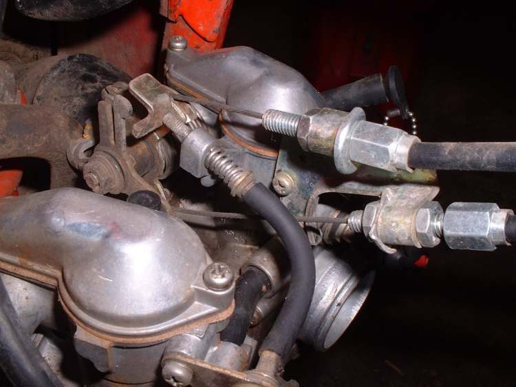

Many bikes have two throttle cables. One pulls the throttle open. The other pulls it shut, so the throttle can be closed even if the return spring sticks or the cable freezes. Twin cables take longer to replace than a single cable, but the return cable is a safety part: do not leave it off and run the bike on the opening cable alone.
Safety
- The throttle must close fully by itself, and by the return cable, before you ride.
- You may need to lift or remove the fuel tank: work outside, no flames, catch any fuel.
You need
- The right cable or pair for your make, model and year. The pull and return cables have different ends; check both.
Steps
- Photograph both cables at the grip and at the carburettor or throttle body. Note which cable is the pull and which is the return; they are often marked.
- Slacken both adjusters at the grip and at the engine end so both cables are slack.
- Open the grip housing (usually two screws) and unhook both cable ends from the grip.
- At the engine end, unhook both cable ends from the pulley and free the outers from the bracket.
- Tape the new cables to the old ones and pull them through along the same route, through every guide and clip.
- Hook the new cables to the pulley and the grip, each in its own slot. Lubricate them unless they are lined.
- Set free play on the pull cable with its adjuster (Adjust throttle free play).
- Set the return cable as the manual says: just enough slack that it does not hold the throttle open. Never tight.
- Tighten the locknuts and refit the boots and the grip housing.
Check your work
- With the grip released, the throttle pulley rests on its stop.
- Turn the grip open and then push it shut: the throttle closes through the return cable.
- Engine idling: turn the bars lock to lock. The idle must not change.
If it did not fix the problem
- Grip stiff even with new cables: Strip, clean and lubricate a twist grip.
- Throttle still slow to close: Throttle sticks or does not snap shut.